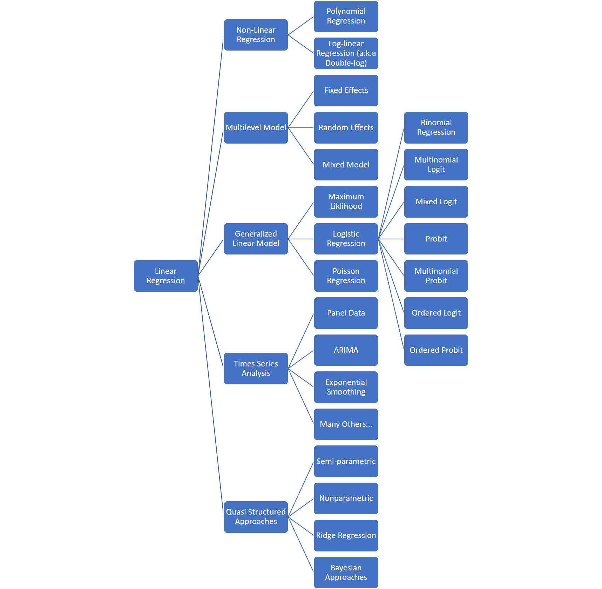

Ahh… regression analysis…. the Siberian Husky of data science. In the same way that these dogs loyally forged paths to new lands across the frigid arctic frontier, regression analysis has blazed the trail to higher analytical accomplishments. Ordinary least square (OLS), linear regression, analysis of variance (ANOVA), multiple ANOVA (MANOVA) are all terms referring to the powerful technique of using correlation and variation of different terms to quantify relationships between the variables. Hundreds of methods have started with this basic approach and introduced different flavors. Figure 1 like the biological tree of life illustrates branches, connections and the evolution of the many methods stemming from this fundamental design.
Figure 1: Regression Tree of Life
Phew! I am exhausted just looking at all the options to approach a question. From my experience, the vast majority of business insights can be obtained from linear regression, the simplest approach. In an applied business setting, it is so much more important to spend time understanding the context of the data than using complex, niche statistical techniques. Let’s spend the rest of this article developing an intuition for this powerful method.
Many business questions can be posed in a regression framework. For example, did a price change (independent variable) impact sales (dependent variable)? Or did the color of the ad (independent variable) impact the click through rate (dependent variable)? The dependent variable is the item you want impacted by the other aspects of the data and is denoted by y. The independent variables are symbolized by x’s. The impact of the x’s is portrayed by β‘s. Putting it all together, a regression analysis is the effort of defining this equation for a particular set of data:
y = β0 + β1x1 + ε
One last important piece to the equation is unexplained variation. There is messiness in the real world and life which leads to imperfect patterns. This imperfection is represented by ε and is called the error term.
Now that we have established that regression analysis is powerful and we know what it does, how do we use the results? For answering business questions, there are three main results that we need to discuss. The R2 value gives an indication of how much variation of the y is explained by the x’s and β’s. It can kind of be thought of as a percentage. If it is 0.5 then ~50% of the variation in y is explained by the regression equation (excluding the error). Ok. Now the really exciting part for applied business analytics. The coefficients (β’s) tell you how a change in the x impacts the y variable, just like the slope from secondary school. So if the β1 is 3 then an increase of 1 in x1 increases y by 3. The final piece of the interpretation of the coefficients (β’s) is whether the association between x1 and y is strong or weak. This is measured by a p-value and is called the statistical significance. It can be thought of as the chance that there is no real relationship between the x and the y. For example, if the p-value on β1 is 0.1 then there is roughly a 10% chance that the association is just random and not real.
I always feel the need to put knowledge to use in an extremely applied setting. Thus, I would like to offer the game below. Go ahead… do data!
Problem: We would like to know if our ads are generating brand awareness. Does spending on ads increase the impressions? By how much?
To do this we need to answer the following questions. At the bottom of the page are the answers if you want to check.
Q1 What should be the dependent variable (y)?
Q2 What should be the explanatory variable (x)?
Q2 Is the model a good model?
Q3 Can you find an outlier?
Q4 What happens when you add/remove Ad Color as another x variable?
JAVASCRIPT GAME GOES HERE
Answers:
A1
A2
A3
A4